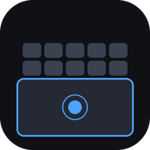

PhoneDeck
Paste the link from your PC, then connect
Phone and PC must be on the same Wi-Fi or hotspot, with PhoneDeck running on the PC.
The key changes each time the PC server starts, so paste the new link when it does.
✓ Ready for offline use
✓ Ready for offline use